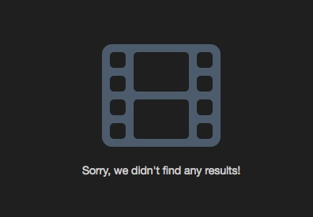

Commonly Encountered Errors¶
This page is being used for common errors outside our control, and commonly made mistakes. If you're after a fix for a known fault, see Known Faults.
TV Show search results disappear¶
This is due to our TV Provider TVMaze not having the metadata we need to process that TV Show. We require TV Maze to supply us with a TVDBId for that show. You can easily check this by calling the TV Maze API: http://api.tvmaze.com/search/shows?q=Dexter
You can see under the externals object there should be a theTvDb property. If that is null then Ombi cannot process that show.
You can request the theTvDb id to be added here
If you search for a TV show and get this error:

This is most commonly caused by incorrect spelling. 😃
This could also be caused by there not being enough metadata available such as thetvdbid and/or episode information.
These are two checks that Ombi looks for to verify that a show exists and is available to be requested.
Most of the time, you can freely edit the listings on TVMAZE and the theTVDB to have the information needed to make an item available.
If you have edited the TVMAZE and/or theTVDB listings for a show, there is a time delay before the APIs have the new information. Give it a few hours before searching again.
Docker Issues¶
If you're running all your services in containers, be mindful that sometimes NAT is a fickle mistress for those who fiddle.
If you have services behind a reverse proxy, use the full external address for the service.
If you have them behind Organizr as well, then use the Docker IP and port of each container instead - to avoid any routing or authentication issues that this can cause.
If you use the host IP instead of the container IP, be sure to use the local port you mapped to the container, rather than simply the container port (these are not always the same).
For a breakdown of docker networking (and some reasoning), see Docker Networking.
Proxmox LXC Containers¶
set LC_ALL=en_US.UTF-8
or
sudo locale-gen "en_US.UTF-8"
or
sudo dpkg-reconfigure locales
and reboot
Taken from https://github.com/Ombi-app/Ombi/issues/1783#issuecomment-351498238
i386 unsupported¶
N: Skipping acquire of configured file 'main/binary-i386/Packages' as repository 'https://apt.ombi.app/develop jessie InRelease' doesn't support architecture 'i386'
Replace deb http://apt.ombi.app/develop jessie main with deb [arch=amd64] http://apt.ombi.app/develop/ jessie main in /etc/apt/sources.list.d/ombi.list.
Ombi cannot start after attempting a MySQL migration¶
Note: Only works when shifting to MySQL databases when you are already running Ombi 4.7.x, and you are staying on the same version
In some instances, migrating the __EFMigrationsHistory entries fails to succeed.
To get around this, we need to recreate and populate the tables manually in our MySQL server.
With multiple databases (assuming they are named Ombi, Ombi_Settings, and Ombi_External), this can be achieved by running this MySQL command in your preferred MySQL interface (CLI, PHPMyAdmin, MySQL workbench etc).
It will drop the invalid entries (if they exist), then create valid ones with all the current migrations (as at the time of uploading the script).
Cannot start Ombi on Ubuntu 19.04¶
.Net Core 5.0 is not supported officially on Ubuntu 19.04 (see Supported Distributions to confirm).
Since the Ombi backend uses .Net Core, we will have to manually install the older version of libssl (from 18.10) in order to make Ombi run.
To confirm this is the fault, run journalctl -u Ombi -b and look for the line "no usable version of libssl found" - this will confirm that this is the fix.
We can do this using the following commands from a terminal:
wget http://archive.ubuntu.com/ubuntu/pool/main/o/openssl1.0/libssl1.0.0_1.0.2n-1ubuntu6_amd64.deb
sudo dpkg -i libssl1.0.0_1.0.2n-1ubuntu6_amd64.deb
Start the Ombi service with service Ombi start and confirm that it's worked with systemctl status ombi.
libunwind8 error¶
libunwind.so.8: cannot open shared object file You may need to install libunwind8.
Run apt install libunwind8
Mobile Notifications & PiHole¶
Numerous PiHole and AdGuard lists block OneSignal by default, causing Ombi to be unable to push a notification to it and your mobile device to be unable to retrieve one from it.
The error will be similar to:
There was an error when sending the Mobile message. Please check your settings.
Check your PiHole/Adguard immediately after hitting the "Test Notification" button.
If you see "onesignal.com" being blocked, whitelist it and try again.
Ombi failing to start on macOS Monterey¶
As of macOS Monterey the AirPlay listener now uses port 5000 by default. This causes Ombi to fail to start due to the port being in use.
You can turn off the AirPlay function under System Preferences -> Sharing. This will allow Ombi to start, however AirPlay will turn on again and cause the same issue at the next reboot.
The only possible workaround at present is to set the host startup parameter to use a different port (--host http://*:new_port).
Ombi has lost connection to the *arrs¶
If Ombi has previously been able to connect to something (like Sonarr) just fine, but suddenly can't, chances are a firewall has come into play for some reason.
There can be other causes, of course, but if the service you've lost connection to is hosted on a Windows machine, then it's likely firewall related. Even when disabled, Windows Firewall can do some 'janky things'™.
Windows 10 (and 11) have a strange habit of setting themselves to a public network, at random. This can be verified in an administrator Powershell with the command Get-NetConnectionProfile. If it returns "NetworkCategory: Public", this can be easily resolved by using the command Get-NetConnectionProfile | Set-NetConnectionProfile -NetworkCategory Private.
Container fails to start with CoreCLR error¶
The error "Failed to create CoreCLR, HRESULT: 0x80070008" can be resolved by updating your docker engine to 20.10.10 or higher. Reference.
No such column: x.RequestId¶
If you are on the latest version and are seeing SQLite Error 1: 'No such column: x.RequestId', refer below for a solution.
Referenced in Issue 3214
Here is a one-liner to fix the issue, assuming you are running in a docker container, your container has ombi in the name, your image requires the config dir to be mounted at /config, and the host is running Debian, Ubuntu, or a related distro that uses apt. If any of these points aren't true, see the details below the command and modify to your needs.
sudo apt update
sudo apt install -y sqlite3
sqlite3 $( \
docker inspect --format '{{ range .Mounts }}{{if eq .Destination "/config"}}{{ .Source }}{{end}}{{end}}' \
$(docker ps --filter name=ombi --format '{{.ID}}') \
)/app/OmbiExternal.db 'ALTER TABLE PlexServerContent ADD COLUMN RequestId INTEGER NULL'
Explanation of parts:
Update apt & install sqlite3
Inspect container $CONTAINER_ID, list mounts, and if the mount destination is /config, print the source
docker inspect --format \
'{{ range .Mounts }}{{if eq .Destination "/config"}}{{ .Source }}{{end}}{{end}}' \
$CONTAINER_ID
List containers, filtering on ombi. Format output to only include the container id.
Concatenate the inspected directory path with the path to the .db file within the /config dir
Tell sqlite3 to run the actual query
sqlite3 /opt/ombi/app/OmbiExternal.db 'ALTER TABLE PlexServerContent ADD COLUMN RequestId INTEGER NULL'
After you are done, you can remove sqlite3
RUN:
If "sqlite3" is not installed:
Fix Database:
If your Ombi databases are in a different location than "/etc/Ombi", replace that with the location of your Ombi databases.
If we want to uninstall "sqlite3" to clean the system.